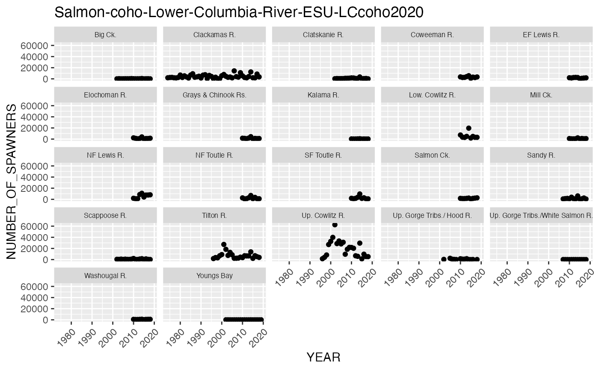
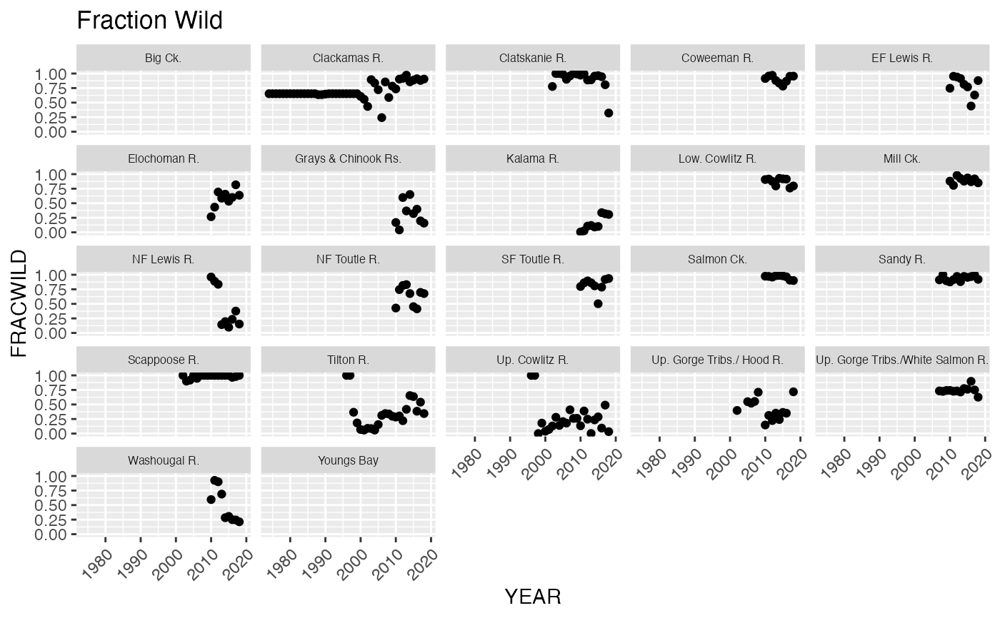

R/Salmon-coho-Lower-Columbia-River-ESU-LCcoho2020.R
Salmon-coho-Lower-Columbia-River-ESU-LCcoho2020.RdSpawner and fraction wild data. Species: Coho salmon. Method: Survey. View raw data or Download raw data
A csv file.
For certain populations, there are multiple types of spawner count data. For example survey and model counts that are based on different methods. In this case, the 'Series' column gives a name for the dataset to distinguish it from other data sets of the same population.
ESU or DPS name.
Species name.
Method for the spawner count. Survey refers to a spawning ground survey; the count itself is an expansion. See the SPS (database link in sources below) for the details for the data. LadderCount is a weir or dam count. Model refers to the DABOM model that expands from PIT tag data. GSI is an expansion based on the BOXCAR model, which uses GSI to allocate fish sampled at Lower Granite Dam.
Major population group within the ESU or DPS.
NWFSC id for the population.
Long population name.
Shorter population name used in Viability Report figures and tables.
Run timing (fall, winter, spring, etc). If missing, see the ESU/DPS name or may not be applicable for the species.
Integer in XXXX format. The year that the count was made. See details for ESU or DPS specific comments.
Total spawners or escapement count. -99 means missing count. May be integer or decimal.
Decimal between 0 and 1. Fraction wild or natural. -99 means missing information.
Data contributor. Listed under Source below.
NWFSC staff who compiled the data file: Mari Williams
Data citation. Listed under References below.
Grays and Chinook Rivers - late Coho salmon: Washington Department of Fish and Wildlife
Youngs Bay: Oregon Department of Fish and Wildlife
Big Creek: Oregon Department of Fish and Wildlife
Elochoman River - late Coho salmon: Washington Department of Fish and Wildlife
Clatskanie River: Washington Department of Fish and Wildlife
Mill, Abernathy, and Germany Creeks - late Coho salmon: Washington Department of Fish and Wildlife
Scappoose River: Oregon Department of Fish and Wildlife
Lower Cowlitz River - late Coho salmon: Washington Department of Fish and Wildlife
Coweeman River - late Coho salmon: Washington Department of Fish and Wildlife
North Fork Toutle Coho: Washington Department of Fish and Wildlife
South Fork Toutle Coho: Washington Department of Fish and Wildlife
Upper Cowlitz and Cispus Coho: Washington Department of Fish and Wildlife
Tilton Coho: Washington Department of Fish and Wildlife
Kalama River - late Coho salmon: Washington Department of Fish and Wildlife
North Fork Lewis Coho: Washington Department of Fish and Wildlife
East Fork Lewis Coho: Washington Department of Fish and Wildlife
Salmon Creek - late Coho salmon: Washington Department of Fish and Wildlife
Clackamas River: Oregon Department of Fish and Wildlife
Sandy River: Oregon Department of Fish and Wildlife
Washougal River - late Coho salmon: Washington Department of Fish and Wildlife
Upper Gorge (Columbia) Coho: Washington Department of Fish and Wildlife
Hood River: Oregon Department of Fish and Wildlife
Ford, M.J., et al. 2022. Biological Viability Assessment Update for Pacific Salmon and Steelhead Listed Under the Endangered Species Act: Pacific Northwest. U.S. Department of Commerce, NOAA Technical Memorandum NMFS-NWFSC-171. https://doi.org/10.25923/kq2n-ke70
Salmon Population Summaries (SPS) Database: https://www.fisheries.noaa.gov/resource/tool-app/salmon-population-summaries-sps
Original source:
Grays and Chinook Rivers - late Coho salmon: Columbia River Coho Natural Origin Spawner Abundance Dataset (2010-2018). Spawner abundance data. Washington Department of Fish and Wildlife. Protocol and Methods available at https://fortress.wa.gov/dfw/score/score/. Accessed from www.cax.streamnet.org vers May 26 2020 10:00PM by Mari Williams, NOAAF NWFSC/OAI.
Youngs Bay: Columbia River Coho Natural Origin Spawner Abundance Dataset (2002-2019). Spawner abundance data. Oregon Department of Fish and Wildlife. Protocol and Methods available at http://odfwrecoverytracker.org/metadata/. Accessed from www.cax.streamnet.org vers May 26 2020 10:00PM by Mari Williams, NOAAF NWFSC/PSMFC.
Big Creek: Columbia River Coho Natural Origin Spawner Abundance Dataset (2002-2018). Spawner abundance data. Oregon Department of Fish and Wildlife. Protocol and Methods available at http://odfwrecoverytracker.org/metadata/. Accessed from www.cax.streamnet.org vers May 26 2020 10:00PM by Mari Williams, NOAAF NWFSC/PSMFC.
Elochoman River - late Coho salmon: Columbia River Coho Natural Origin Spawner Abundance Dataset (2010-2018). Spawner abundance data. Washington Department of Fish and Wildlife. Protocol and Methods available at https://fortress.wa.gov/dfw/score/score/. Accessed from www.cax.streamnet.org vers May 26 2020 10:00PM by Mari Williams, NOAAF NWFSC/OAI.
Clatskanie River: Columbia River Coho Natural Origin Spawner Abundance Dataset (2002-2018). Spawner abundance data. Washington Department of Fish and Wildlife. Protocol and Methods available at https://fortress.wa.gov/dfw/score/score/. Accessed from www.cax.streamnet.org vers May 26 2020 10:00PM by Mari Williams, NOAAF NWFSC/OAI.
Mill, Abernathy, and Germany Creeks - late Coho salmon: Columbia River Coho Natural Origin Spawner Abundance Dataset (2010-2018). Spawner abundance data. Washington Department of Fish and Wildlife. Protocol and Methods available at https://fortress.wa.gov/dfw/score/score/. Accessed from www.cax.streamnet.org vers May 26 2020 10:00PM by Mari Williams, NOAAF NWFSC/OAI.
Scappoose River: Columbia River Coho Natural Origin Spawner Abundance Dataset (2002-2018). Spawner abundance data. Oregon Department of Fish and Wildlife. Protocol and Methods available at http://odfwrecoverytracker.org/metadata/. Accessed from www.cax.streamnet.org vers May 26 2020 10:00PM by Mari Williams, NOAAF NWFSC/PSMFC.
Lower Cowlitz River - late Coho salmon: Columbia River Coho Natural Origin Spawner Abundance Dataset (2010-2018). Spawner abundance data. Washington Department of Fish and Wildlife. Protocol and Methods available at https://fortress.wa.gov/dfw/score/score/. Accessed from www.cax.streamnet.org vers May 26 2020 10:00PM by Mari Williams, NOAAF NWFSC/OAI.
Coweeman River - late Coho salmon: Columbia River Coho Natural Origin Spawner Abundance Dataset (2010-2018). Spawner abundance data. Washington Department of Fish and Wildlife. Protocol and Methods available at https://fortress.wa.gov/dfw/score/score/. Accessed from www.cax.streamnet.org vers May 26 2020 10:00PM by Mari Williams, NOAAF NWFSC/OAI.
North Fork Toutle Coho: Columbia River Coho Natural Origin Spawner Abundance Dataset (2010-2018). Spawner abundance data. Washington Department of Fish and Wildlife. Protocol and Methods available at https://fortress.wa.gov/dfw/score/score/. Accessed from www.cax.streamnet.org vers May 26 2020 10:00PM by Mari Williams, NOAAF NWFSC/OAI.
South Fork Toutle Coho: Columbia River Coho Natural Origin Spawner Abundance Dataset (2010-2018). Spawner abundance data. Washington Department of Fish and Wildlife. Protocol and Methods available at https://fortress.wa.gov/dfw/score/score/. Accessed from www.cax.streamnet.org vers May 26 2020 10:00PM by Mari Williams, NOAAF NWFSC/OAI.
Upper Cowlitz and Cispus Coho: Columbia River Coho Natural Origin Spawner Abundance Dataset (1996-2018). Spawner abundance data. Washington Department of Fish and Wildlife. Protocol and Methods available at https://fortress.wa.gov/dfw/score/score/. Accessed from www.cax.streamnet.org vers May 26 2020 10:00PM by Mari Williams, NOAAF NWFSC/OAI.
Tilton Coho: Columbia River Coho Natural Origin Spawner Abundance Dataset (1996-2018). Spawner abundance data. Washington Department of Fish and Wildlife. Protocol and Methods available at https://fortress.wa.gov/dfw/score/score/. Accessed from www.cax.streamnet.org vers May 26 2020 10:00PM by Mari Williams, NOAAF NWFSC/OAI.
Kalama River - late Coho salmon: Columbia River Coho Natural Origin Spawner Abundance Dataset (2010-2018). Spawner abundance data. Washington Department of Fish and Wildlife. Protocol and Methods available at https://fortress.wa.gov/dfw/score/score/. Accessed from www.cax.streamnet.org vers May 26 2020 10:00PM by Mari Williams, NOAAF NWFSC/OAI.
North Fork Lewis Coho: Columbia River Coho Natural Origin Spawner Abundance Dataset (2010-2018). Spawner abundance data. Washington Department of Fish and Wildlife. Protocol and Methods available at https://fortress.wa.gov/dfw/score/score/. Accessed from www.cax.streamnet.org vers May 26 2020 10:00PM by Mari Williams, NOAAF NWFSC/OAI.
East Fork Lewis Coho: Columbia River Coho Natural Origin Spawner Abundance Dataset (2010-2018). Spawner abundance data. Washington Department of Fish and Wildlife. Protocol and Methods available at https://fortress.wa.gov/dfw/score/score/. Accessed from www.cax.streamnet.org vers May 26 2020 10:00PM by Mari Williams, NOAAF NWFSC/OAI.
Salmon Creek - late Coho salmon: Columbia River Coho Natural Origin Spawner Abundance Dataset (2010-2018). Spawner abundance data. Washington Department of Fish and Wildlife. Protocol and Methods available at https://fortress.wa.gov/dfw/score/score/. Accessed from www.cax.streamnet.org vers May 26 2020 10:00PM by Mari Williams, NOAAF NWFSC/OAI.
Clackamas River: Columbia River Coho Natural Origin Spawner Abundance Dataset (1974-2018). Spawner abundance data. Oregon Department of Fish and Wildlife. Protocol and Methods available at http://odfwrecoverytracker.org/metadata/. Accessed from www.cax.streamnet.org vers May 26 2020 10:00PM by Mari Williams, NOAAF NWFSC/PSMFC.
Sandy River: Columbia River Coho Natural Origin Spawner Abundance Dataset (2007-2018). Spawner abundance data. Oregon Department of Fish and Wildlife. Protocol and Methods available at http://odfwrecoverytracker.org/metadata/. Accessed from www.cax.streamnet.org vers May 26 2020 10:00PM by Mari Williams, NOAAF NWFSC/PSMFC.
Washougal River - late Coho salmon: Columbia River Coho Natural Origin Spawner Abundance Dataset (2010-2018). Spawner abundance data. Washington Department of Fish and Wildlife. Protocol and Methods available at https://fortress.wa.gov/dfw/score/score/. Accessed from www.cax.streamnet.org vers May 26 2020 10:00PM by Mari Williams, NOAAF NWFSC/OAI.
Upper Gorge (Columbia) Coho: Columbia River Coho Natural Origin Spawner Abundance Dataset (2007-2018). Spawner abundance data. Washington Department of Fish and Wildlife. Protocol and Methods available at https://fortress.wa.gov/dfw/score/score/. Accessed from www.cax.streamnet.org vers May 26 2020 10:00PM by Mari Williams, NOAAF NWFSC/OAI.
Hood River: Columbia River Coho Natural Origin Spawner Abundance Dataset (2002-2018). Spawner abundance data. Oregon Department of Fish and Wildlife. Protocol and Methods available at http://odfwrecoverytracker.org/metadata/. Accessed from www.cax.streamnet.org vers May 26 2020 10:00PM by Mari Williams, NOAAF NWFSC/PSMFC.
data('Salmon-coho-Lower-Columbia-River-ESU-LCcoho2020')
library(ggplot2)
out$NUMBER_OF_SPAWNERS[out$NUMBER_OF_SPAWNERS==-99] <- NA
ggplot(out, aes(x=YEAR, y=NUMBER_OF_SPAWNERS)) +
geom_point(na.rm = TRUE) +
ggtitle('Salmon-coho-Lower-Columbia-River-ESU-LCcoho2020') +
facet_wrap(~COMMON_POPULATION_NAME) +
theme(axis.text.x = element_text(angle = 45, vjust = 1, hjust=1),
strip.text.x = element_text(size = 6))

out$FRACWILD[out$FRACWILD == -99] <- NA
ggplot(out, aes(x=YEAR, y=FRACWILD)) +
geom_point(na.rm = TRUE) +
ggtitle('Fraction Wild') +
ylim(0,1) +
facet_wrap(~COMMON_POPULATION_NAME) +
theme(axis.text.x = element_text(angle = 45, vjust = 1, hjust=1),
strip.text.x = element_text(size = 6))
